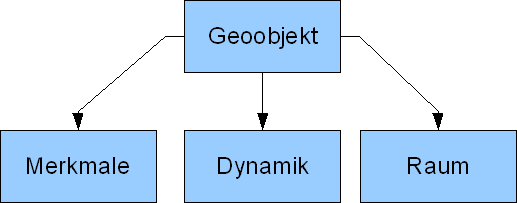
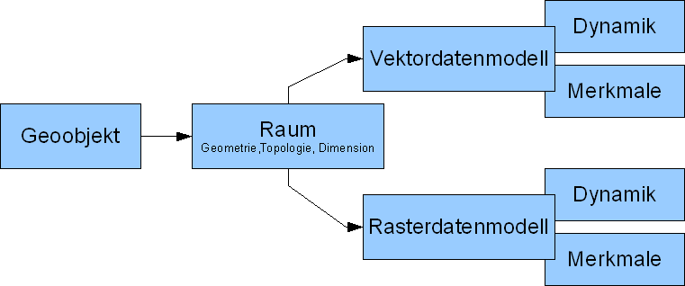
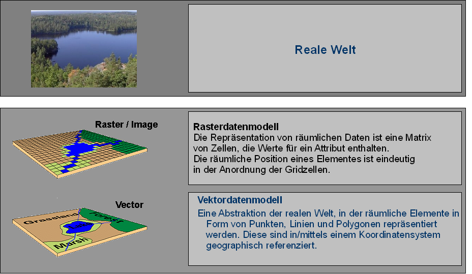
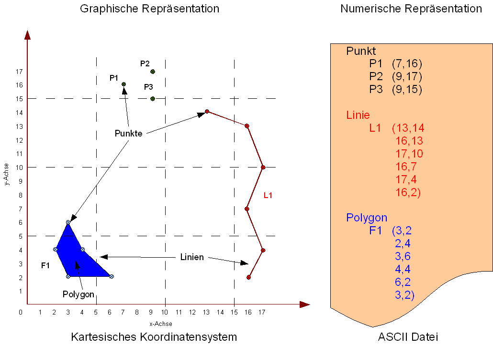
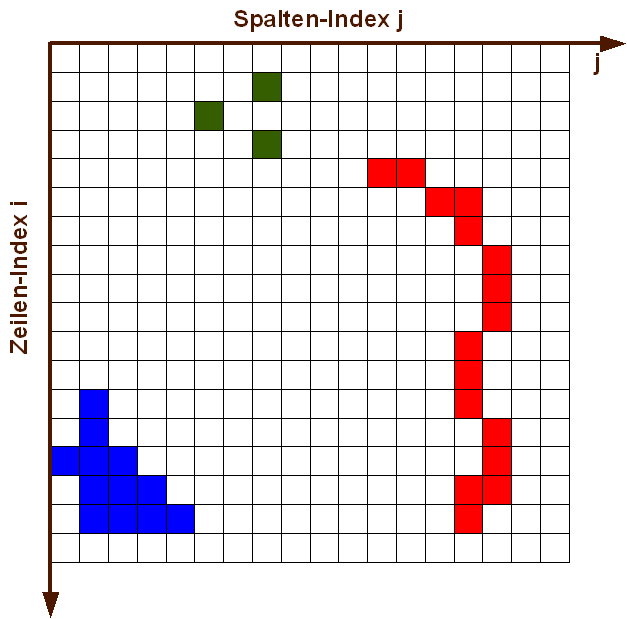
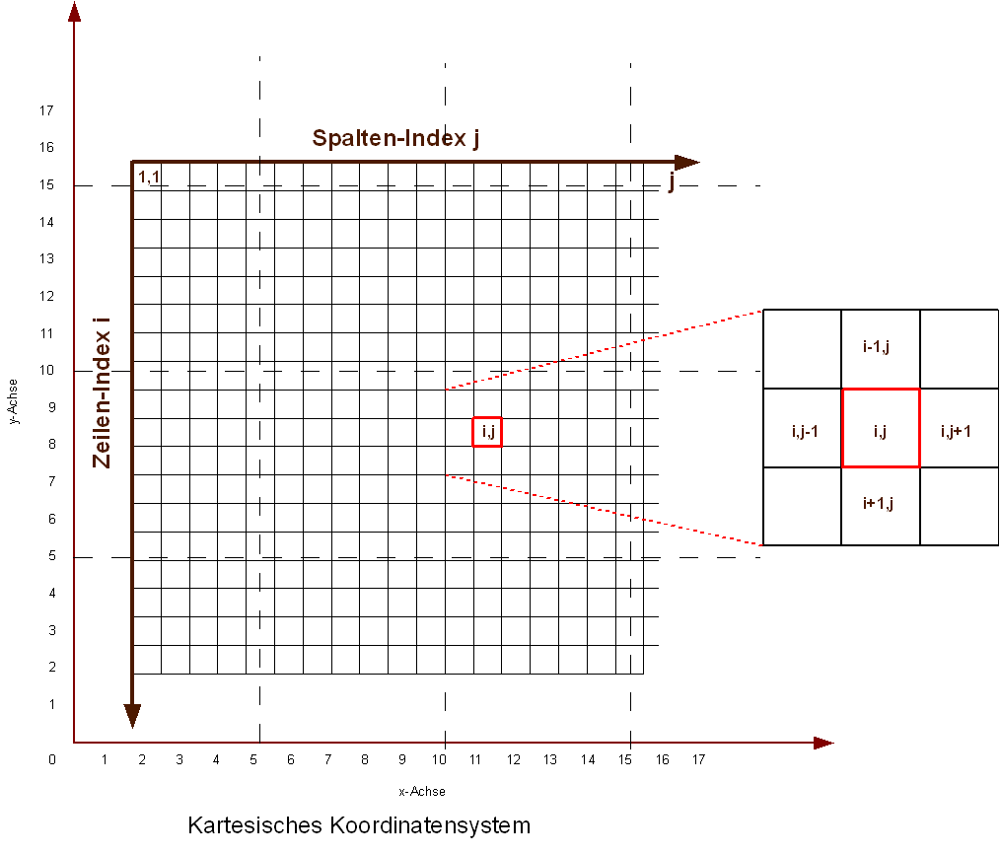

Datenmodelle als Konstruktionskonzept zur Abbildung räumlicher Echtwelt

Wir haben festgestellt, dass binär als Geodaten gespeicherte, multidimensionale Merkmalsausprägungen von Raumkontinua und diskrete Geoobjekte, die mit Hilfe von Koordinaten verortet sind, die geographische Repräsentation von Wirklichkeit in GI-Systemen darstellen.
Allerdings verdeutlicht dieses Konzept nicht die konkrete digitale bzw. technische Umsetzung. Die betrachteten Geoobjekte enthalten eine nach wie vor gegen unendlich strebende Fülle von Informationen. Gleiches gilt noch mehr für die Raumkontinua, die je nach Skala beliebig komplex sein können. Für die digitale Repräsentation räumlicher Merkmale benötigen wir eine effiziente und einfache Methode, Informations- bzw. Datenreduktion betreiben zu können.

Vor dem wiederholt erörterten Hintergrund der notwendigen Vereinfachung ist es daher naheliegend anzunehmen, dass auch räumliche Daten für eine effiziente Repräsentation abstrakte Konzepte bzw. Modelle benötigen. Solche Konzepte werden Datenmodelle genannt. Ein Datenmodell wird durch die Abstraktion von Objekten (Entitäten) und deren Eigenschaften (Attribute) gebildet. In diesem Vorgang werden gleiche Objektarten zusammengefasst. Da die Grundlage aller GI-Systeme auf einer räumlichen Repräsentationen beruht, muss Abbildung 18 für das bessere Verständnis der Datenmodellierung etwas reorganisiert und angepasst werden.

In Abbildung 19 verdeutlicht diesen zentralen Aspekt der Modellierung räumlicher Daten. es besteht die Notwendigkeit, dass sowohl die in der Zeit festen Merkmalsausprägungen als auch sich zeitlich verändernden Merkmale der Geobjekte abgebildet werden sollen. In der Anwendung von GIS haben sich hierfür zwei vollständig unterschiedliche Datenmodelle etabliert, die Raster- bzw. Vektordatenmodell genannt werden. Beide Datenmodelle sind prinzipiell sowohl für die kontinuierliche als auch die diskrete Raumrepräsentation verwendbar. In der Praxis werden jedoch kontinuierliche Daten gewöhnlich im Rasterdatenmodell und diskrete Daten im Vektordatenformat abgebildet. Beide Datenmodelle unterscheiden sich vorrangig in der Art der räumlichen Repräsentation ihrer Merkmale. Betrachte wir unter diesem Blickwinkel einen Landschaftsausschnitt und nutzen zur räumlichen Abstraktion und Repräsentation jeweils Raster- bzw. Vektorddatenmodell ergibt sich ein Bild wie in der Abbildung 20.
Das Vektordatenmodell
In einem kartesischen Koordinatensystem, das zur Repräsentation einer euklidischen Geometrie notwendig ist, können, wie allgemein bekannt sein sollte, aus dem Grundelement Punkt (topologisch als Knoten bezeichnet) beliebig komplexe räumliche Strukturen zur Modellierung von Geoobjekten aufgebaut werden. Üblich ist es sowohl Linien (topol. Kanten), die durch zwei verbundene Punkte definiert sind, als auch einen geschlossenen Linienzug der als Fläche, bzw. Polygon (topol. Masche) bezeichnet wird, diesen Grundformen zuzurechnen. Die Abbildung 21 verdeutlicht die graphische und numerische Repräsentation des Vektordatenmodells.

Abbildung 21: Graphische und numerische Darstellung der drei Grundobjekte (Punkt, Linie, Fläche) eines Vektordatenmodells mit Hilfe eines kartesischen Koordinatensystems. (GIS.MA 2009)Das Rasterdatenmodell
Anders als beim Vektordatenmodell wird bei Rasterdatenmodellen der Raum grundsätzlich mit Hilfe zweidimensionaler Objekte in beliebiger Form und Größe aber ohne gegenseitige Überschneidung bzw. Lücken abgebildet. Die Merkmalsausprägungen werden als Zahlenwerte, die jeder Zelle zugeordnet sind, abgespeichert.

Abbildung 22: graphische und numerische Darstellung des Rasterdatenmodells. Zur besseren Vergleichbarkeit wurden die aus Abb. 21 bekannten Objekte gewählt (GIS.MA 2009)Obwohl möglich sind Rasterdatenmodelle mit unregelmäßig geformten Zellen in der GIS-Praxis quasi nicht existent. Meist sind die Zellen in einer gleichförmigen Matrix, z.B. einem Gitter (grid) aus Zeilen (horizontal) und Spalten (vertikal) angeordnet (vgl. Abbildung 22). Die Verwendung regelmäßiger Maschen im Rasterdatenmodell ist für die automatisierte Datenverarbeitung wenn nicht zwingend so doch ungleich besser geeignet. So sind z.B. Berechnungen und der Zugriff auf die Zellen bei regelhaften Rastern ohne Aufwand durchführbar. In der Praxis werden regelmäßige Maschen fast ausschließlich als Quadrate (gelegentlich auch als Dreiecke bzw. Sechsecke) verwendet. Diese Quadrate werden in Zusammenhang mit Rasterdaten als Rasterzelle oder Pixel (picture element) bezeichnet.

Durch Anordnung, der sich nicht überschneidenden Zellen in Zeilen und Spalten entsteht ein impliziter Raumbezug jeder Zelle. Zu beachten ist dabei, dass der Ursprung eines Rasterbildes immer in der oberen linken Ecke liegt und von dort üblicherweise mit den beiden Laufindizes i,j durchgezählt wird. Hierdurch ist jedes Pixel eindeutig identifizierbar. Auf diese Weise ist bezogen auf jedes Pixel auch ein expliziter Raumbezug vorhanden. Allerdings nutzt der theoretische explizite Raum wenig für die Verortung in einem definierten kartesischen Koordinatensystem bzw. in der Echtwelt. Diese Verortung ist sowohl für die gemeinsame Verwendung von Rasterdaten mit Vektordaten notwendig, als auch unerlässlich für die geographischen Referenzierung der Rasterzellen bezogen auf die Echtwelt. Daher werden Rasterdatenmodelle grundsätzlich auch mit einem kartesischen Koordinatensystem versehen. Dieses hat allerdings den Ursprung (wie üblich) in der unteren linken Ecke. Die Rasterzellen können also sowohl über ihren Laufindex als auch über das kartesische Koordinatensystem im Raum identifiziert werden (vgl. Abbildung 23).
Bearbeiten Sie...
Öffnen Sie mit Google Earth die Datei Raster oder Vektor. Versuchen Sie zu identifizieren, welches Datenmodell für welche der dargestellten Information verwendet wird.
- Welche(s) Datenmodell(e) nutzt ihrer Meinung nach Google Earth?
- Lassen sich aus der am Bildschirm dargestellten Informationen nähere Eigenschaften des verwendeten Datenmodells ableiten? Wenn ja welche? Wenn nein warum nicht?
- Schalten Sie auf Vertikalsicht und entfernen Sie die Option Gelände. Zoomen Sie sich langsam bis auf 10 Meter Höhe über Grund. Was beobachten Sie?